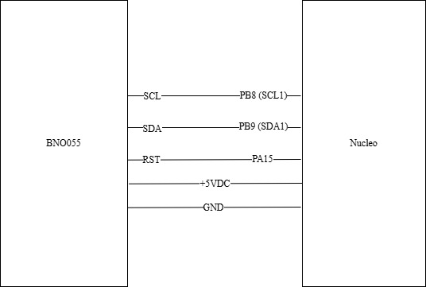

IMU and State Estimation
As part of the initial system design, we explored the use of an inertial measurement unit (IMU) to improve the robot’s ability to estimate its state during operation. In particular, the IMU was intended to provide measurements of heading and angular velocity that could be combined with encoder data and a dynamic model of the robot to produce a more accurate estimate of the system state. This approach is commonly used to reduce the effects of wheel slip and sensor noise in mobile robotics.
The sensor selected for this purpose was the Bosch BNO055 Absolute Orientation Sensor. The BNO055 is a 9-degree-of-freedom (9-DoF) sensor that integrates an accelerometer, gyroscope, and magnetometer, along with an onboard microcontroller capable of performing real-time sensor fusion. This allows the device to output processed orientation data such as Euler angles and angular velocity directly, reducing the need for external computation.
We developed a custom driver to interface with the BNO055 over I²C. The driver supports initialization, mode configuration, calibration data handling, and retrieval of key measurements such as heading and yaw rate. In parallel, we constructed a framework for a discrete-time observer intended to combine IMU data, encoder measurements, and motor inputs to estimate the robot’s state.
Sensor Justification
The BNO055 was selected due to its ability to provide fused orientation data without requiring implementation of a full sensor fusion algorithm. Traditional IMUs require combining accelerometer, gyroscope, and magnetometer data through filters such as complementary or Kalman filters, which can be computationally expensive and complex to tune. The BNO055 performs this fusion internally, simplifying software development.
Additionally, the sensor provides direct access to heading and angular velocity, which align well with the variables needed for state estimation. These measurements could be used to improve tracking of the robot’s orientation and motion, particularly in scenarios where encoder data alone may be insufficient due to slip or disturbances.
State Estimation Approach
We implemented the structure for a discrete-time observer using a linearized model of the robot derived from previous work. The observer was designed to combine motor inputs and sensor measurements into a unified estimate of the system state. This included provisions for matrix-based state updates, measurement incorporation, and eventual reconstruction of the robot’s position.
However, while the framework for the observer was developed, the full state estimation algorithm was not completed. The matrix update equations and pose estimation logic were left commented out during testing, and the system was instead used primarily to stream IMU measurements such as heading and yaw rate.
Design Decision (Why It Was Not Used)
Although the IMU and observer framework were functional, state estimation was not used in the final project. The robot’s navigation strategy relied primarily on line following and discrete event-based behaviors, which were sufficiently robust when using line sensors and encoder feedback alone.
Incorporating state estimation would have required additional effort in tuning the observer gain matrix and validating the model, with limited expected benefit for the given task. Given time constraints and the effectiveness of the existing control strategy, the added complexity was not justified.
As a result, the final implementation prioritized simplicity and reliability, and the IMU was not used as part of the robot’s operational control.
Mounting
The IMU was mounted securely to the chassis using available mounting hardware, with care taken to align the sensor axes with the robot frame. Proper alignment is important to ensure that heading and angular velocity measurements correspond correctly to the robot’s motion.
Wiring
The BNO055 communicates with the Nucleo using the I²C protocol. The following connections were used:
{kind=link}

The Nucleo acts as the controller on the I²C bus, generating the clock signal and initiating communication, while the IMU responds as a peripheral device. This interface allows efficient communication while minimizing the number of required microcontroller pins.